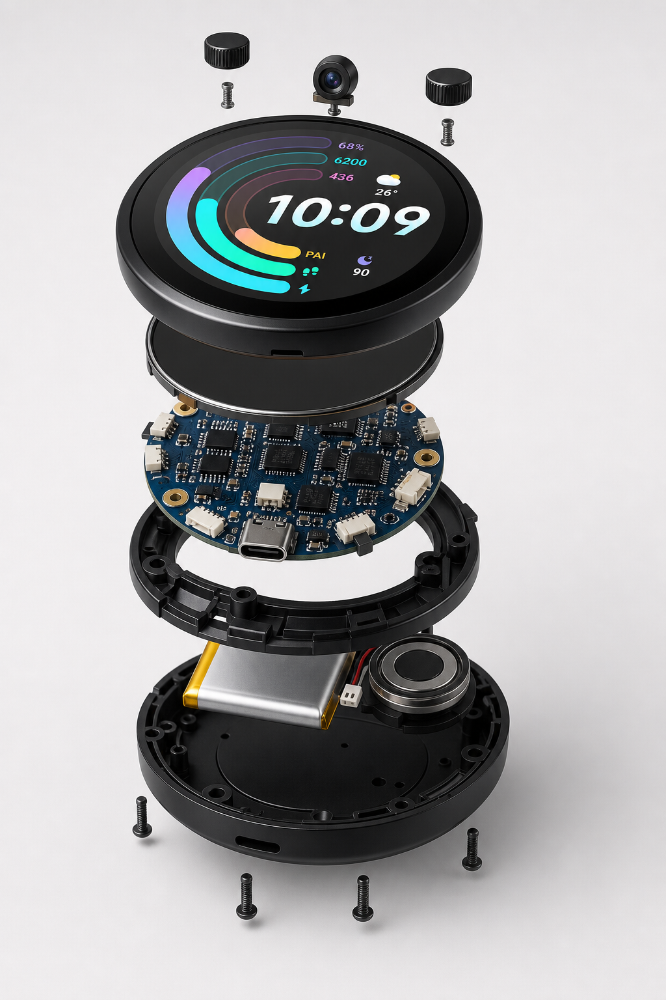
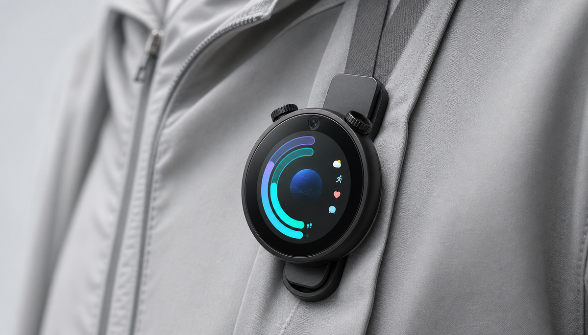
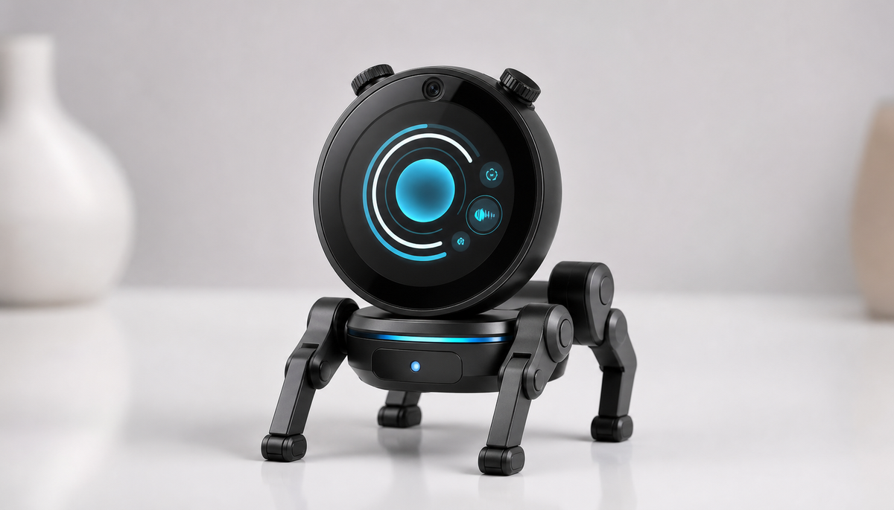

屏幕
让 AI 不只停留在语音里，也能显示状态、代码、提醒、表情和工具界面。
Origin
一开始，答案并不清楚。智能硬件的方向太多，传感器、机器人、语音助手、玩具、开发板，每一个都像是一个入口，但也都像已经被别人定义过。
于是我们换了一个问题：如果不从品类出发，只从真实需求出发，会长出什么？答案逐渐收敛成一个形态：一块屏幕，一个麦克风，一枚摄像头，两个带按压的旋钮，蓝牙、Wi-Fi、充分的外设接口，以及可以被自由定义的软件空间。
这就是 Qici Cue。它是一个起点：接上键盘，它可以是 vibe coding 的桌面控制台；夹在衣服上，它可以记录生活；装到底盘上，它可以移动、探索，甚至变成一个有表情、有反馈、有记忆感的 AI 陪伴玩具。

Hardware
让 AI 不只停留在语音里，也能显示状态、代码、提醒、表情和工具界面。
让设备拥有看见和听见的能力，能记录生活，也能理解当下环境。
比触摸屏更直接的控制方式，适合调节、确认、切换模式和创意交互。
蓝牙、Wi-Fi 和预留外设接口，让它可以连接手机、电脑、传感器和更多硬件。
Extensions

放在桌面，它是一台可编程的 AI 控制台。屏幕给反馈，旋钮做调节，键盘承接输入，适合 coding、提示词实验和工具流控制。

夹在衣服或背带上，它成为随身视角的记录器。不是为了监控生活，而是帮你保存转瞬即逝的线索。

接入移动底盘，它可以巡航、避障、探索空间，成为一个能被编程的桌面机器人平台。

装到小狗样子的机械底盘上，它不再只是一个设备，而是可以表达、移动、回应你的 AI 玩具原型。
Scenes
把它放在桌面，旋钮切换任务、屏幕显示状态、麦克风捕捉想法，让编程不再只发生在键盘里。
像一个小型随身记忆节点，记录画面、声音和时间线，帮你保存日常里容易被忽略的片段。
它可以有表情、有反应、有性格。不是固定功能的玩具，而是可以被持续训练和改造的陪伴硬件。
Position
我们相信，下一代个人智能硬件不应该只给用户一个封闭功能，而应该给用户一个可以探索的入口。Qici Cue 要做的，就是把这个入口放到桌面、口袋和生活现场。
Contact